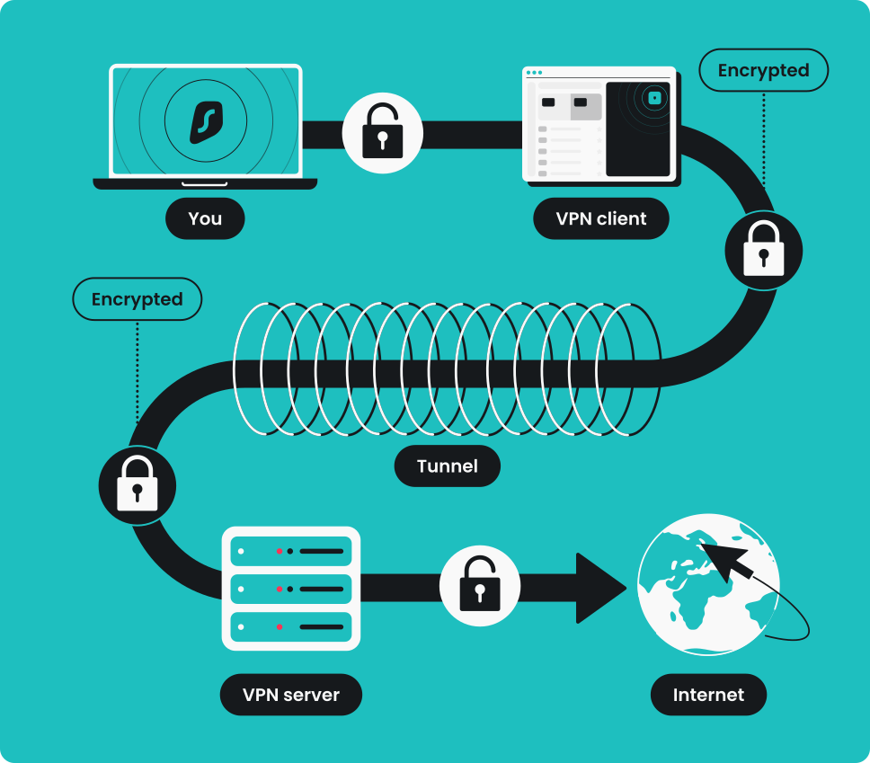
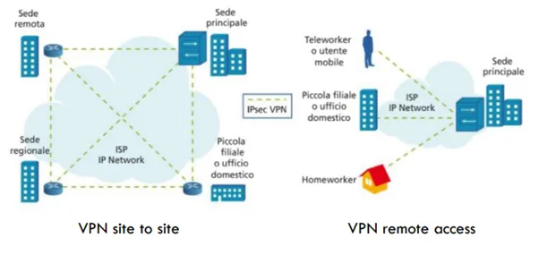
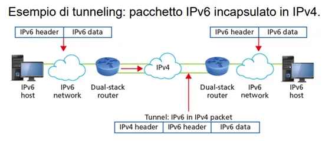

1. Cos'è una VPN
Una VPN (Virtual Private Network) è una rete privata creata dentro un'infrastruttura pubblica. Crea un tunnel cifrato su Internet: il traffico al suo interno è illeggibile per chi lo intercetta. I 3 problemi principali sono: variabilità dei tempi di trasferimento, controllo degli accessi e sicurezza delle trasmissioni.
2. Tipi di VPN
- Remote Access VPN (Client-to-Site): permette a un singolo utente di connettersi alla LAN aziendale da remoto, come se fosse fisicamente in ufficio. Usa un NAS (Network Access Server) per l'autenticazione tramite RADIUS (AAA: Authentication, Authorization, Accounting) e un software VPN Client sul dispositivo dell'utente.
- Site-to-Site VPN: collega reti di sedi diverse. Gli utenti non se ne accorgono, è tutto gestito dai gateway. Si divide in:
- Intranet-based: tutte le sedi appartengono alla stessa azienda.
- Extranet-based: collega aziende partner con uno spazio condiviso limitato.
- VPN Commerciali (uso personale): usate per streaming, gaming, home banking su Wi-Fi pubblici, bypassare censure.

3. Sicurezza VPN: I Tre Pilastri
- Autenticazione: l'utente si autentica al NAS con user+password, pin, chiave elettronica o QR code (MultiFactor Authentication – MFA).
- Cifratura: il traffico è cifrato con algoritmi come 3DES, IDEA, AES. Le chiavi sono negoziate tramite IKE (Internet Key Exchange).
- Tunneling: i pacchetti originali vengono incapsulati in pacchetti esterni. In modalità sicura vengono anche cifrati prima dell'incapsulamento.
- Modalità Trasporto: solo i dati sono cifrati, l'header IP rimane visibile. Usata per comunicazioni host-to-host.
- Modalità Tunnel: l'intero pacchetto (header + dati) viene incapsulato in un nuovo pacchetto. Gestita da router/firewall.

4. Protocolli di Tunneling
IPsec – opera a livello Network (Layer 3), garantisce sicurezza end-to-end. Composto da:
- AH (Authentication Header): autentica e garantisce integrità, ma NON cifra.
- ESP (Encapsulating Security Payload): autentica, garantisce integrità E cifra. È il più usato.
- IKE (Internet Key Exchange): negozia le chiavi tra i due endpoint in due fasi.
Le Security Association (SA) sono accordi tra i due nodi che definiscono protocollo e cifratura da usare. Sono unidirezionali (ne servono due per comunicare). Gestite da SAD (database delle SA attive) e SPD (database delle politiche di sicurezza).
SSL/TLS – alternativa a IPsec, opera a livello Session/Trasporto. Struttura a due livelli:
- Record Protocol: frammenta, comprime e cifra i dati.
- Handshake Protocol: gestisce autenticazione e negoziazione della crittografia.
L'handshake avviene in 4 passi: il client si connette, il server invia il certificato digitale, il client lo verifica e invia la propria chiave cifrata, il server conferma e inizia la comunicazione cifrata.
5. VPN BGP/MPLS
Offerta dagli ISP come servizio gestito. Non cifra i dati ma separa logicamente il traffico. Componenti: CE (Customer Edge), PE (Provider Edge), P (Provider core router).
6. Tipi di VPN per Livello di Sicurezza
- Trusted VPN (es. MPLS): la riservatezza è garantita dall'ISP tramite separazione logica, senza cifratura.
- Secure VPN (es. IPsec, SSL/TLS): usano cifratura e tunneling, ma i percorsi passano per rete pubblica.
- Hybrid VPN: combinano le due: la rete dell'ISP è Trusted, le connessioni remote usano cifratura Secure.